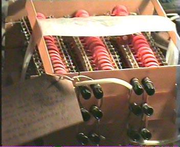

The Nicolay Zaev Generator

THE
DIRECT CONVERSION OF THE ENVIRONMENT
TEMPERATURE INTO ELECTRICITY.
Courtesy
of Sergey M. Godin
created on October 20, 1998 - JLN
Labs - Last update march 3, 2010
Toutes les
informations et schémas sont publiés gratuitement ( freeware )
et sont destinés à un usage personnel et non commercial
All informations and
diagrams are published freely (freeware) and are intended for a private use and a non commercial
use.
return to the Electromagnetic devices home page